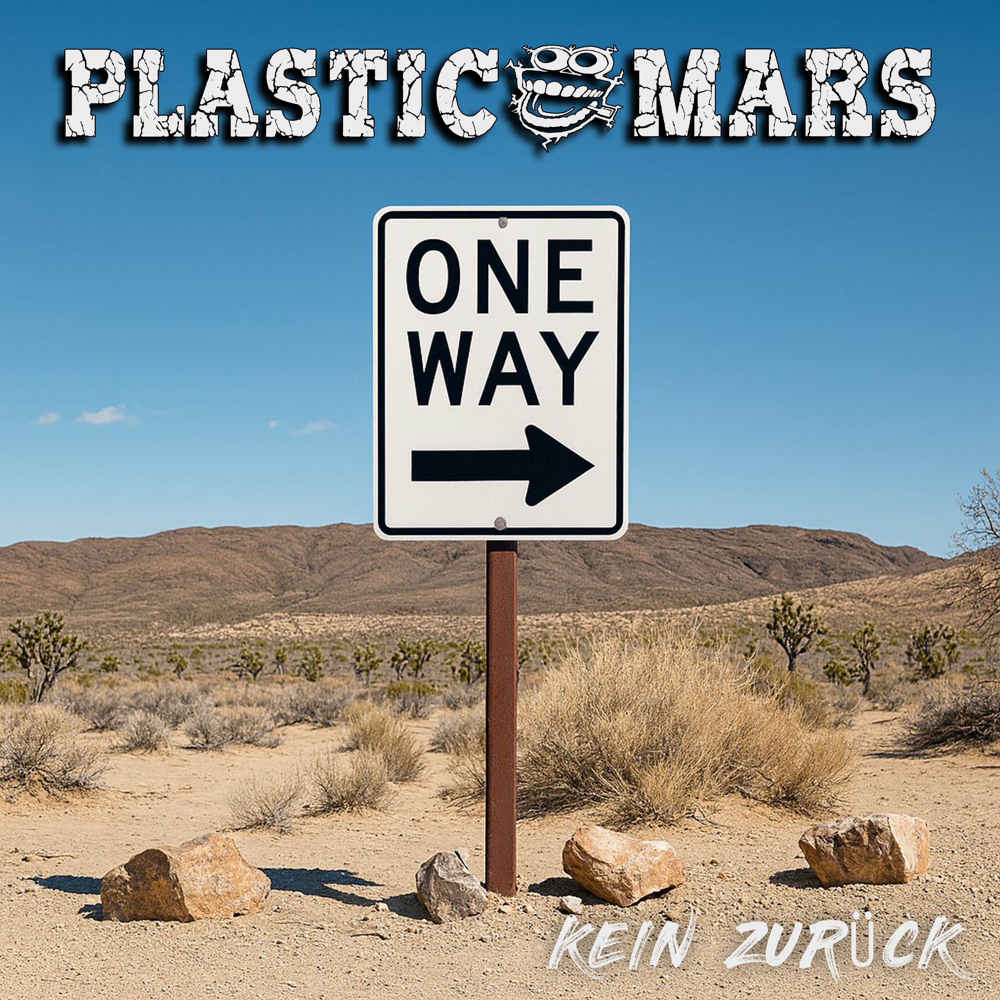

Vorab gehört
Plastic Mars - Kein Zurück

Hinweis: "Kein Zurück" erscheint offiziell am 01.07.2026. Dieser Text basiert auf vorab zur Verfügung gestelltem Pressematerial.

Plastic Mars machen es einem nicht leicht.
Da schickt eine Band einen Song rüber, der thematisch irgendwo zwischen Elternhaus, Abschied, Rückendeckung und "geh raus, mach dein Leben" steht, und musikalisch dann auch noch in Richtung US-Skate-Punk schielt.
Normalerweise ist das der Moment, in dem man vorsichtig die Stirn runzelt.
Denn seien wir ehrlich: Wenn deutsche Punkbands versuchen, nach kalifornischer Sonne, Highschool-Parkplatz und Skateboard unter dem Arm zu klingen, endet das gerne wie ein Pausenbrot mit Sonnenbrille. Gut gemeint, leicht peinlich, und irgendwo ruft einer "Woho", obwohl niemand gefragt hat.
Plastic Mars kriegen das auf "Kein Zurück" aber erstaunlich sauber hin.
Die Single erscheint offiziell am 01.07.2026 und liegt dem RandaleFUNK vorab vor. Also noch nicht draußen, aber schon laut genug, um im Flur zu stehen und "Na, schreibste was?" zu fragen.
Inhaltlich geht es um diesen einen großen Schritt: Ein Kind wird älter, geht durch die Tür und muss seinen eigenen Weg finden. Die Eltern stehen nicht mehr vorneweg mit Landkarte, Brotdose und erhobenem Zeigefinger, sondern eher dahinter. Nicht weg. Nur anders da.
Rückendeckung statt Fernbedienung.
Das ist eigentlich ein ziemlich gutes Bild.
Denn irgendwann kommt dieser Punkt, an dem man Menschen nicht mehr festhalten kann, ohne sie kleiner zu machen. Man kann ihnen nur noch mitgeben, was man eben mitgeben kann: Vertrauen, ein paar Narben, vielleicht einen halbwegs brauchbaren moralischen Kompass und die Hoffnung, dass sie nicht direkt beim ersten Sturm ihr ganzes Leben gegen einen Gutschein für schlechte Entscheidungen eintauschen.
"Kein Zurück" erzählt genau von diesem Übergang. Glaube ich zumindest.
Und ja, das hätte auch ganz fürchterlich werden können.
So ein Thema schreit ja geradezu danach, in Kitsch zu ersaufen. Akustikgitarre, bedeutungsschwere Pause, Papa guckt aus dem Fenster, Mama faltet ein T-Shirt, irgendwo fällt eine Träne auf billiges Laminat.
Zum Glück machen Plastic Mars daraus keinen Familienfilm für Menschen, die zu oft Versicherungswerbung geguckt haben.
Der Song ist melodischer Punkrock mit ordentlich Zug nach vorne. Die Gitarren sind sauber, der Refrain ist groß, die "Woho"-Momente sind genau da, wo sie bei dieser Art Musik hingehören: gefährlich nah an der Grenze zum Mitgrölen.
Und ja, ich gebe es ungern zu: Das funktioniert.
Das ist kein Deutschpunk, der sich in der Ecke mit einer Dose Billigbier selbst bemitleidet. Das ist eher dieser Skate-Punk-Ansatz, bei dem Melodie, Tempo und große Gefühle zusammen auf ein Longboard steigen und hoffen, dass keiner die Krankenversicherung sehen will.
Plastic Mars klingen dabei nicht wie eine Band, die krampfhaft Kalifornien cosplayt. Eher wie eine Band aus hiesigem Beton, die begriffen hat, dass ein guter Refrain auch bei deutschem Wetter aufgehen darf.
Der Text bleibt nah am Thema, ohne komplett pädagogisch zu werden. Es geht um Mut, um Unsicherheit, um die Welt da draußen, die eben nicht nur schön, sondern auch hässlich, grau und gelegentlich ein ziemlicher Arsch sein kann.
Aber genau deshalb passt die Botschaft.
Geh trotzdem.
Mach dein Ding.
Fall hin, wenn es sein muss.
Aber steh wieder auf.
Und irgendwo im Hintergrund stehen Leute, die dich nicht mehr an die Hand nehmen können, aber immer noch bereit sind, dir den Rücken freizuhalten.
Das ist weniger rebellisch im klassischen "Alles kaputt, alles Scheiße"-Sinne.
Aber vielleicht ist genau das die kleine Gemeinheit an dem Song: Er tut so, als wäre er eine einfache Aufbruchshymne, und plötzlich sitzt man da und denkt über Eltern, Kinder, Vertrauen und diesen ganzen emotionalen Kram nach, den man eigentlich erfolgreich unter drei Lagen Punkrock verstecken wollte.
Frechheit.
"Kein Zurück" ist kein Song, der die Welt neu erfindet.
Aber er weiß ziemlich genau, was er sein will: eine melodische, ehrliche Punkrock-Nummer über den Moment, in dem aus Festhalten Rückendeckung wird.
Und das macht er verdammt ordentlich.
Bleibt nur eine Frage:
Wie geht es eigentlich dem Fun-Bein des Sängers?
Und ist es inzwischen vollständig, oder muss Plastic Mars weiterhin mit halber Spaß-Statik durch den Skate-Punk-Betrieb humpeln?
Dir gefällt die Arbeit vom RandaleFUNK? Dann unterstütze das Projekt gerne mit einer freiwilligen Spende über Ko-fi.